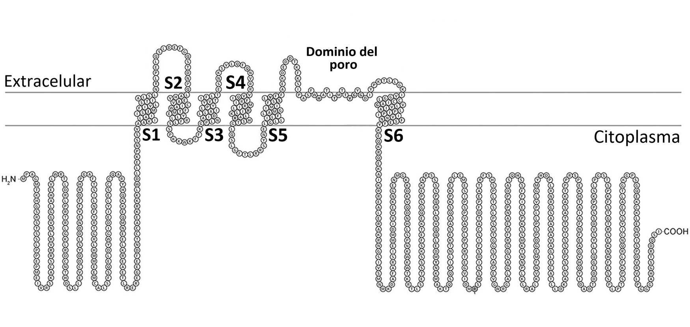
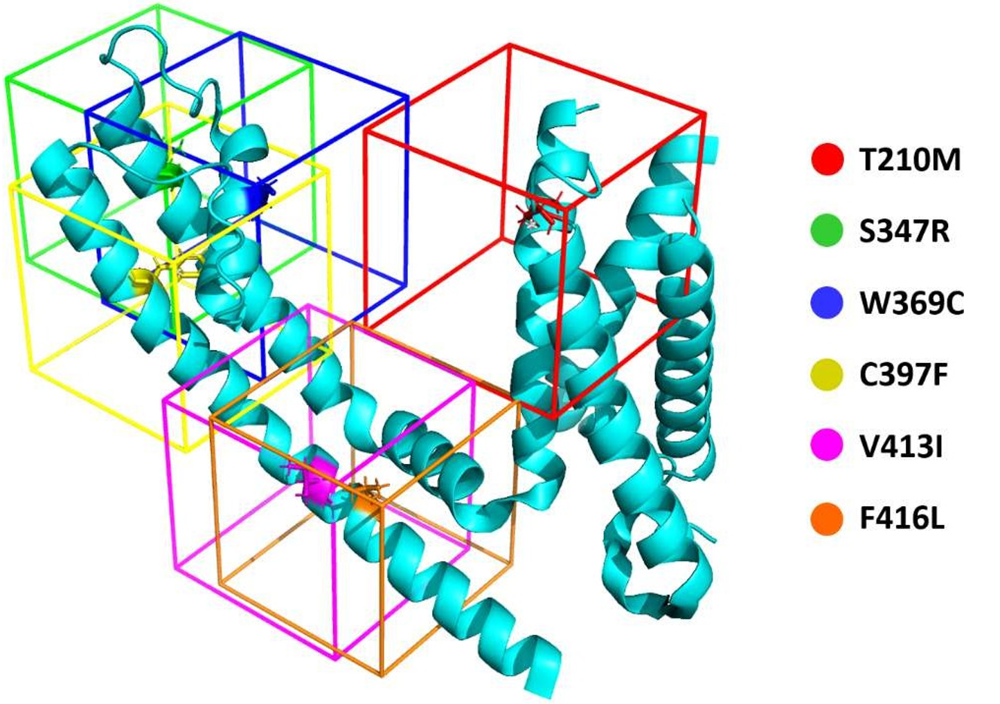
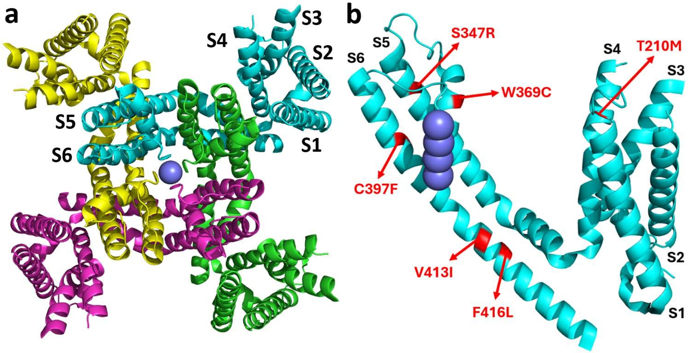
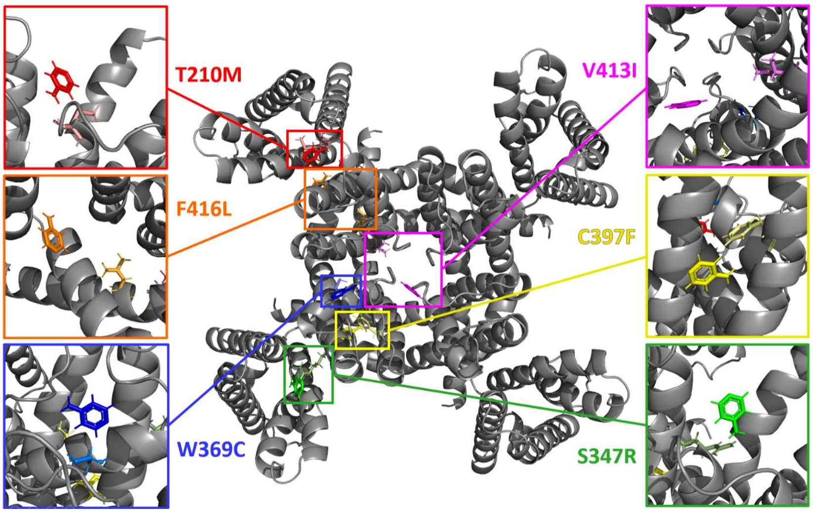
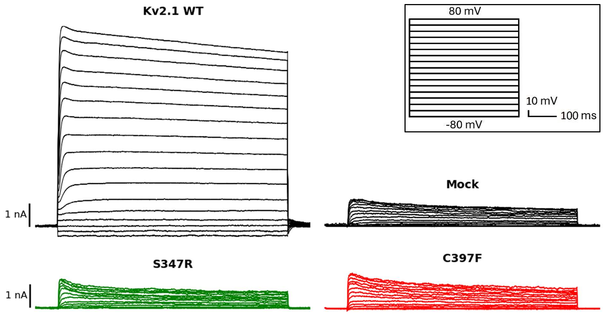

Summary
Epileptic encephalopathies are a type of epilepsy primarily caused by genetic defects. Their main symptoms are the onset of epileptic seizures and severe early developmental delay. Several recent studies have revealed the importance of the KCNB1 gene, which encodes the voltage-gated potassium channel Kv2.1, in the pathogenesis of these diseases.
This work seeks potential pharmacological modulators for six mutations in KCNB1, corresponding to different phenotypes of epileptic encephalopathy. Through virtual screening of large compound libraries, several putative modulators were identified for each mutant channel. Additionally, two of the six mutant channels were characterized using the electrophysiological patch clamp technique.
Keywords: epileptic encephalopathy, Kv2.1, virtual screening, consensus docking, patch clamp.
1. Introduction
Epileptic Encephalopathies
Epilepsy is one of the most common neurological disorders in the world, affecting approximately 70 million people. In epileptic encephalopathies, the epileptic activity itself contributes to generating cognitive and behavioral alterations that worsen over time. Some phenotypes manifest in childhood, producing severe developmental delays affecting behavior and language — these are recognized as developmental epileptic encephalopathies (DEE).
Ion Channels & the Kv2.1 Channel
Ion channels are integral membrane proteins that allow ions to flow across the cell membrane. Voltage-gated potassium channels (Kv) regulate neuronal excitability and cell membrane repolarization. Kv2.1, encoded by KCNB1, is one of the most abundant voltage-gated potassium channels in the central nervous system, primarily found in pyramidal neurons of the cortex and hippocampus.
The channel consists of four identical subunits, each with six transmembrane segments and a pore domain. The S4 segment acts as the voltage sensor — upon depolarization, its basic residues move outward, opening the channel.

The Hydrophobic Coupling Nexus
Recent structural studies revealed a key region called the hydrophobic coupling nexus, located between the voltage-sensing domain and the pore. This nexus is composed of hydrophobic residues and is conserved across different ion channel families. Mutations in this region, such as F416L, are associated with epileptic encephalopathies due to abnormal channel inactivation.
Virtual Screening for Drug Discovery
Drug development typically takes over 10 years and costs more than one billion euros. Virtual screening (VS) technologies allow for rapid, cost-effective discovery of potential candidates in silico. This work uses structure-based virtual screening, where the 3D structure of the target is known and thousands of compounds are docked to evaluate binding energies.
2. Objectives
The overall objective of this work was to identify Kv2.1 modulating compounds capable of correcting the effects of six mutations associated with epileptic encephalopathy. The specific objectives were:
- Functionally characterize Kv2.1 mutations using electrophysiology.
- Generate suitable 3D structures of each channel mutant.
- Locate specific binding centers for each mutant phenotype.
- Virtually screen a large set of compounds against each mutant channel.
- Apply consensus docking to select the best modulators.
3. Materials & Methods
Computational Workflow
The computational search for modulators followed six sequential steps:
- 1. Structure preparation: generation of 3D models for each of the six Kv2.1 mutant channels from the wild-type structure.
- 2. Binding site search: identification of optimal binding regions near each mutated amino acid through local docking with a reference ligand.
- 3. Compound selection: curation of a set of compounds to be screened, with toxicological filtering to remove unsuitable candidates.
- 4. Virtual screening: docking of all selected compounds into each mutant structure using multiple scoring programs.
- 5. Consensus docking: statistical combination of the results from all programs to generate a unified ranking of the best candidates.
- 6. Ligand selection by ADME properties: filtering of the top-ranked compounds based on pharmacokinetic criteria to ensure viability as potential drugs.
Structure Preparation
The 3D structure used was PDB 8SD3, the rat Kv2.1 channel resolved by cryo-electron microscopy. Sequence alignment confirmed high identity between the rat and human proteins, allowing extrapolation of results. Six mutant structures were generated using PyMol mutagenesis, followed by energy minimization in YASARA.
| Wild-type | Position | Mutant | Name |
|---|---|---|---|
| Threonine | 210 | Methionine | T210M |
| Serine | 347 | Arginine | S347R |
| Tryptophan | 369 | Cysteine | W369C |
| Cysteine | 397 | Phenylalanine | C397F |
| Valine | 413 | Isoleucine | V413I |
| Phenylalanine | 416 | Leucine | F416L |
Binding Site Identification
For each mutant structure, a simulation cell was generated around the mutated amino acid. Local docking experiments with a reference ligand (4-aminopyridine, a known potassium channel blocker) were performed to determine the optimal location for virtual screening.

Virtual Screening Programs
- AutoDock: uses a Lamarckian genetic algorithm to search for the best conformations of each ligand, followed by a semi-empirical free energy force field for energy evaluation.
- YASARA (VINA): employs the VINA scoring function, which uses a stochastic optimization algorithm based on Monte Carlo sampling with the Metropolis criterion.
- X-Score: combines three empirical scoring functions evaluating hydrophobic interactions (HPScore, HMScore, HSScore).
- DSX (DrugScore eXtended): a statistical scoring function that evaluates ligand–structure contacts based on probability data from real structures in databases such as RCSB PDB.
Consensus Docking
Seven statistical methods were tested to combine the results from all four programs: NSR, AASS, ECR, RBN, RBR, RBV, and Z-Score. The Rank-by-Rank (RBR) method proved most effective for five of the six channels, while Z-Score was best for the C397F mutant.
Electrophysiological Characterization (Patch Clamp)
HEK 293 LTV cells were transfected with Kv2.1 constructs using Lipofectamine 3000. A step protocol of 17 voltage pulses (−80 mV to +80 mV, 10 mV increments) was applied. Conductance-voltage curves were constructed using the Boltzmann equation to compare wild-type and mutant channel behavior.
4. Results
Structure Quality
The 8SD3 structure met all quality parameters: resolution of 2.95 Å (< 3 Å), 0% atypical residues in the Ramachandran map, a clashscore of 9, and excellent RMSZ values for both bond lengths and angles. Sequence alignment with ClustalOmega confirmed high identity between the rat and human Kv2.1 protein.

Binding Sites
Local docking with the reference ligand revealed specific binding sites near each mutated amino acid, defining optimal simulation cell positions for the subsequent virtual screenings.

Virtual Screening & Consensus Docking
After completing virtual screenings in all six channels with four programs, rankings were generated and combined using statistical consensus methods. For each mutant, the top 31 ligands were selected and filtered by ADME properties including Lipinski's rule of 5, gastrointestinal absorption, blood-brain barrier permeability, solubility, and drug-likeness index.
Additionally, the selected compounds were screened against the wild-type channel to evaluate specificity (ΔBE: difference in binding energy between mutant and wild-type).
Interaction Analysis
Analysis using the Protein–Ligand Interaction Profiler (PLIP) revealed that hydrophobic interactions between carbon atoms predominate in all structure–ligand complexes. Hydrogen bonding was the second most common interaction (1–3 per complex). Notably, none of the mutated residues interact directly with the selected ligands — the modulatory effect is proposed to occur through indirect structural shifts.
Patch Clamp Results
The S347R and C397F mutants were characterized electrophysiologically. Both are loss-of-function mutants — their current densities are drastically reduced compared to the wild-type channel.

Key Finding: The C397F mutant exhibits a voltage-insensitive phenotype, while S347R shows near-normal voltage sensitivity but zero current density — suggesting a deeper problem in protein expression, assembly, or transport to the plasma membrane rather than in channel function itself.
5. Conclusions & Future Projections
- A series of potential modulators were identified for each of the six Kv2.1 mutant channels through structure-based virtual screening and consensus docking.
- The Rank-by-Rank (RBR) consensus method proved most effective for combining results across multiple docking programs.
- Electrophysiological characterization confirmed that S347R and C397F are loss-of-function mutants, but through different mechanisms.
- C397F shows a voltage-insensitive phenotype, while S347R likely has a defect in expression or membrane trafficking.
Future Work
- Electrophysiological characterization of the remaining two mutants (T210M, F416L).
- Immunocytochemical studies to evaluate expression and localization of mutant channels.
- In vitro evaluation of selected modulators using patch clamp to verify their ability to restore wild-type function.